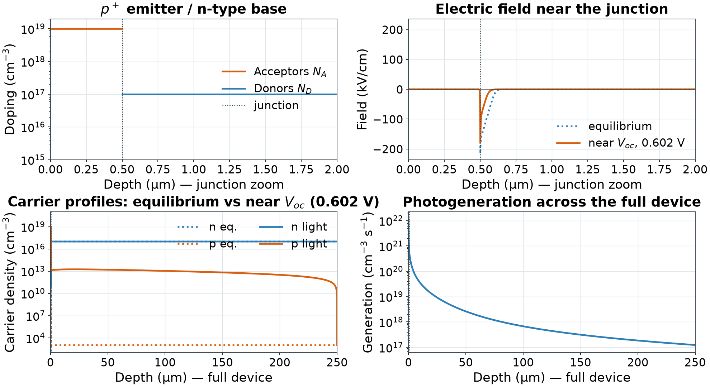
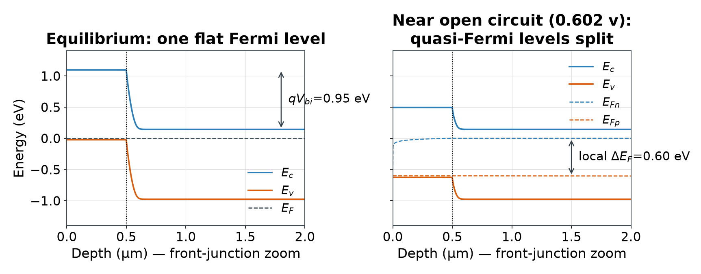

Guiding question: what can measured J–V observables tell us—and what remains uncertain?
Start with the destination
Learning Outcomes & Today’s Story
By the end, you can…
translate a p+-on-n structure into a 1D DEVSIM model
connect doping, electric field, band bending and carrier collection
extract Jsc, Voc, FF and EQE
judge whether fitted parameters are supportable
Evidence before conclusions
state geometry, material assumptions and sign convention
check internal profiles before trusting terminal curves
test sensitivity before fitting a parameter
report residuals, uncertainty and model limits
Buildstructure + equations
Solvecontinuation + sweep
ValidateJ–V + EQE
Calibratefit + diagnose
Device orientation
Read the p⁺-on-n Cell from Front to Rear
Front illumination (AM1.5-like teaching input)↓ ↓ ↓
front ohmic contact · shading omittedx = 0
p⁺ emitter · NA = 1019 cm−30–0.5 µm
metallurgical junction · boundary, not a layerx = 0.5 µm
n-type base · ND = 1017 cm−30.5–250 µm
rear metal contactx = 250 µm
holes h⁺ → front contactelectrons e⁻ → rear contact
Schematic only; vertical layer thicknesses are not to scale.
Light enters through the shallow p⁺ emitter at x = 0
The depletion region extends around the 0.5 µm junction, mostly into the lower-doped n base
Electrons are minority carriers in p⁺; holes are minority carriers in the n base
Direction check: in the depletion region, the built-in field points from n to p (−x): holes drift toward the front and electrons toward the rear. Diffusion also matters in the quasi-neutral regions.
Before solving: sketch the sign of net doping and electric field.
Physics → numerics
Governing Equations Solved by DEVSIM
Electrostatics
∇·(ε∇ψ) = −q(p − n + ND − NA)
Charge sets potential, band bending and electric field.
Carrier conservation
∇·Jn = q(R − G), ∇·Jp = −q(R − G)
Generation, recombination and current must balance.
Jn = qµn(nE + Vt∇n), Jp = qµp(pE − Vt∇p)
1 · Structuredoping + geometry
2 · Meshnodes + edges
3 · Modelsψ, n, p, G, R
4 · SolveNewton iteration
5 · Sweepterminal bias
6 · ExtractJ–V + profiles
Numerical habit: solve equilibrium first, add illumination gradually, then ramp voltage. This continuation sequence stabilizes the nonlinear solve.
Task 2 · Internal physics
One Junction Connects Doping, Field and Carriers
python scripts/plot_profiles.py --bias near-voc

Locate the junction at 0.5 µm in the doping and field panels
Compare equilibrium and illuminated carrier densities
Generation is strongest at the illuminated front surface
Consistency check: do the doping transition and negative field peak occur at the same position? Compare band bending on the next slide.
Tasks 1–2 · Band diagram
Quasi-Fermi-Level Splitting Sets the Photovoltage
python scripts/plot_band.py --bias near-voc

Equilibrium has one flat Fermi level
Illumination creates EFn and EFp
Contact electrochemical-potential difference divided by q equals the applied V
Near this plotted open-circuit point: V ≈ Voc, and local EFn−EFp provides a spatial photovoltage diagnostic.
Explain: under open-circuit illumination, why does stronger recombination reduce the splitting and Voc?
Report the evidence: fitted values are effective model parameters, not automatically unique material constants.
Task 4 · Reproducible fitting
From Raw Data to a Reproducible Fit
1 · Inspectunits + sign
2 · ConvertI → J using area
3 · ValidateJsc, Voc, range
4 · Sweepsensitivity first
5 · Fitfew parameters
6 · Reportresidual + uncertainty
Trace every transformation: preserve raw files, record metadata, and keep the exact configuration with the fit outputs.
Task 5 · Defensible claims
Separate Data, Model and Claim
Data
Preserve raw files; state units, illuminated area and sign convention. Experimental efficiency requires independently measured irradiance.
Model
1D abrupt junction, Boltzmann statistics, fixed mobility, coarse Beer–Lambert optics and terminal Rs/Rsh; no band-gap narrowing, texture or lateral grid.
Claim
Fit only sensitive parameters. Show residuals, uncertainty and cross-observable checks; explain systematic mismatch.
Keep the inverse problem identifiable: a transparent two-parameter diagnosis is stronger than an elaborate unsupported fit.
MICS3090 (L01) · Integrated Circuit Devices
Questions & Discussion
A useful model is the simplest one that explains the observations within clearly stated limits.
Take-home message: build the p+-on-n physics carefully, validate across observables, fit only what the data can identify, and report limitations explicitly.